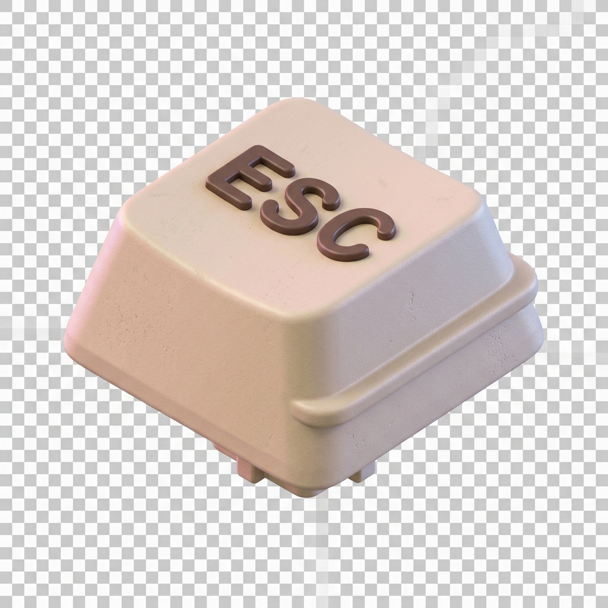
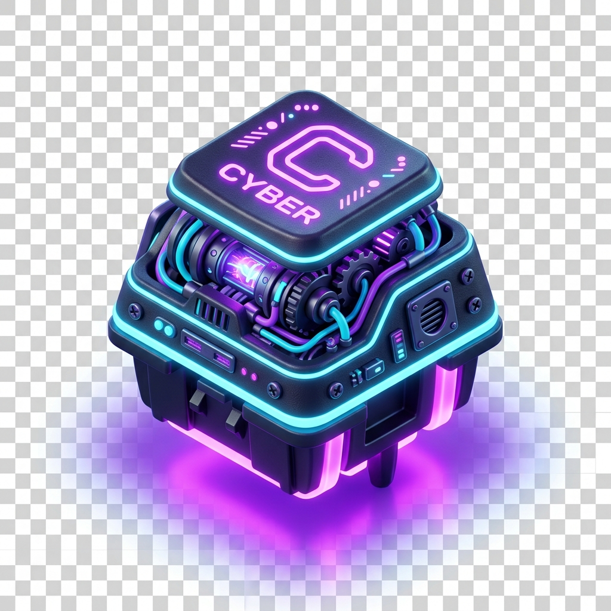
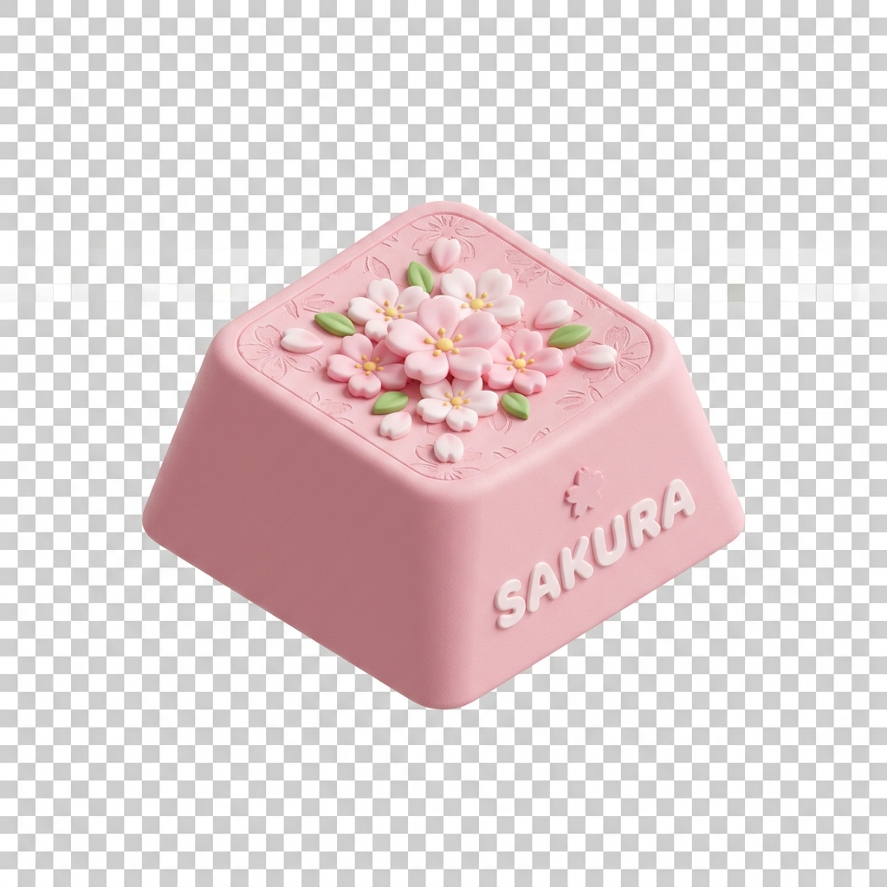
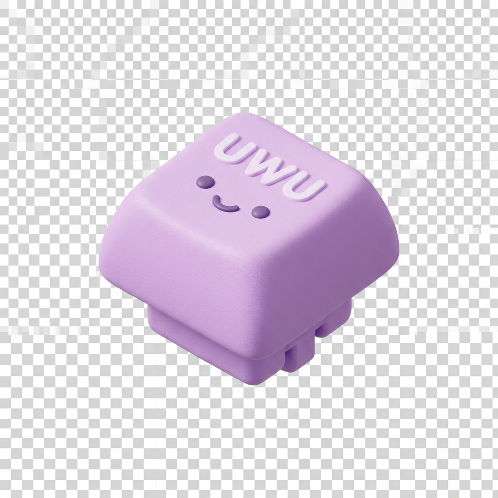
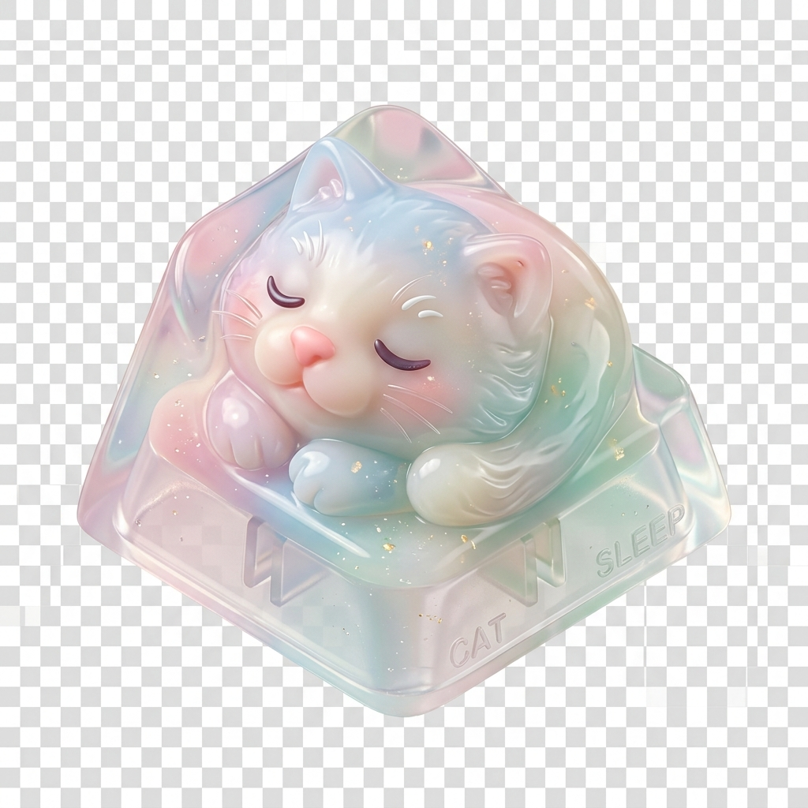
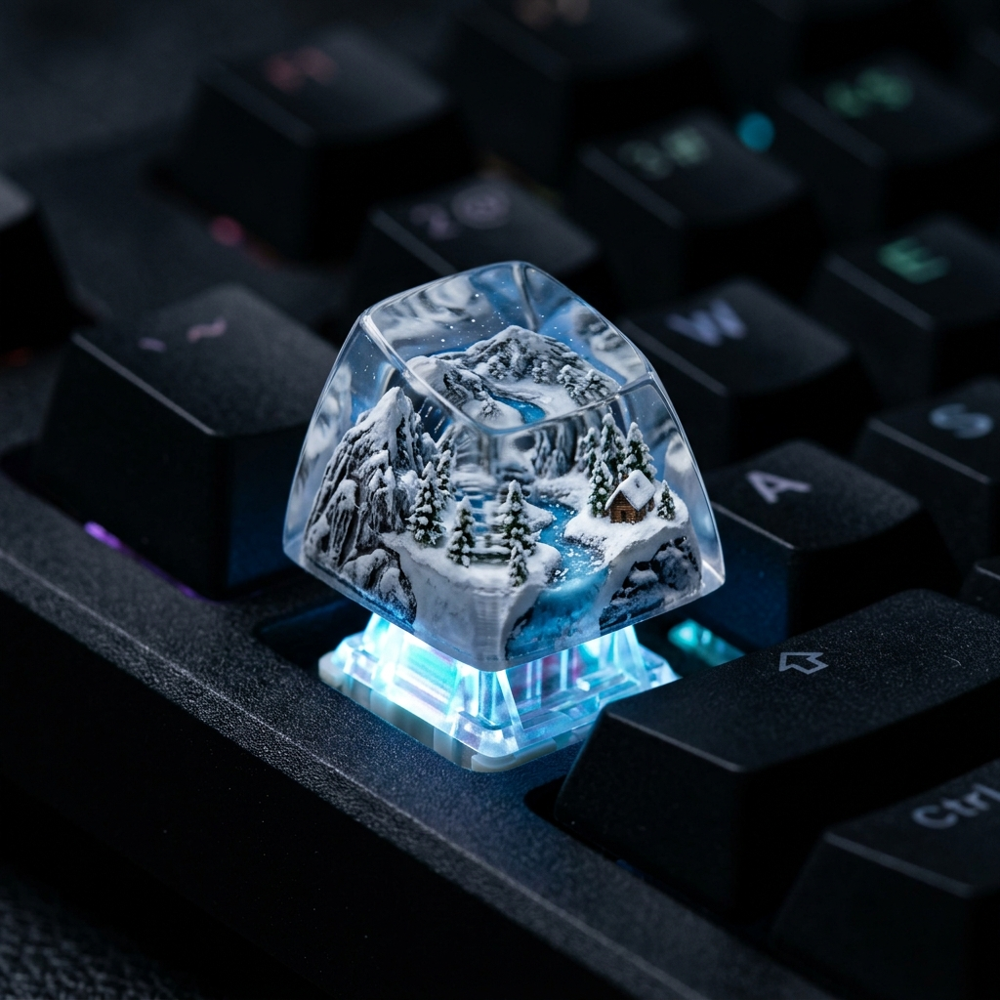

키캡 누르기 게임
웹 브라우저에서 청축, 갈축, 적축 스위치의 만족스러운 기계식 키보드 ASMR 사운드를 즐기세요. 실제 키보드로 타이핑하거나 마우스로 키캡을 클릭해 보세요.
tune 커스터마이징

타건 모드 선택
이곳을 클릭하거나 아무 키나 눌러 소리를 들어보세요.

기계식 키보드 스위치와 타건음(ASMR)의 과학1. 기계식 스위치의 작동 방식과 세 가지 특징
기계식 키보드는 키마다 독립적인 '스위치(Switch)'가 장착되어 있어 각각 독특한 키감과 타건 소리를 만들어 냅니다. 기계식 스위치는 작동 구조에 따라 크게 세 가지로 분류됩니다.
- 클릭형 (Clicky - 청축): 키를 누르면 내부 슬라이더(Click Jacket)가 금속 접점을 때리며 찰각하는 경쾌한 클리키 사운드를 냅니다. 타이핑 피드백이 가장 뚜렷합니다.
- 넌클릭형 (Tactile - 갈축): 찰각하는 소리 없이 슬라이더의 미세한 돌기가 걸리는 느낌(Tactile Bump)만 전달합니다. 소음이 적으면서 구분감이 있어 가장 대중적입니다.
- 리니어형 (Linear - 적축): 걸리는 느낌이나 소리 없이 부드럽고 수직으로 끝까지 내려갑니다. 키압이 가볍고 걸림쇠의 소음이 없어 조용하며, 최근 트렌드인 로우 피치(Thock) 타건음의 대표 주자입니다.
2. 타건음의 높낮이: 하이 피치(Click/Clack) vs 로우 피치(Thock)
최근 키보드 동호회에서 가장 핫한 주제는 바로 '조약돌 소리(Thock)'와 같은 로우 피치 타건음입니다. 타건음의 피치(Pitch)는 스위치의 재질(Nylon, Polycarbonate, POM)과 하우징의 내부 공간 흡음 처리에 의해 결정됩니다.
청축의 사운드는 가벼운 플라스틱과 금속 접점이 부딪히는 하이 피치 클랙(Clack)에 속하고, 적축이나 윤활된 커스텀 스위치는 두꺼운 하우징이 마찰을 줄이며 둔탁하게 부딪히는 로우 피치 톡(Thock)에 가깝습니다. 당사의 시뮬레이터는 이러한 오디오적 특성을 Web Audio API의 다중 주파수 필터링을 통해 정밀하게 복원하였습니다.
Science of Mechanical Keyboard Switches & ASMR Sound
1. Working Principle of Mechanical Switches
Mechanical keyboards have dedicated spring-loaded physical switches under every keycap, creating a unique sound profile and tactile response. These switches fall into three main categories:
- Clicky Switches (Blue): Feature a sliding click jacket that snaps when pressed, making a high-pitched metallic click. Gives the most obvious auditory feedback.
- Tactile Switches (Brown): Provide a subtle physical bump mid-press without the loud click. Offers great feedback for typing while remaining relatively quiet.
- Linear Switches (Red): Press straight down smoothly without any tactile bump or click contact. Highly preferred by gamers for fast, silent response.
2. Audio Pitch: Clacks vs Thocks
The keyboard community heavily favors deep, gravel-like acoustic profiles known as "Thocks" over thin, plasticky "Clacks".
Clacks are typical of hollow plastic boards and clicky blue switches, producing frequencies around 2kHz-4kHz. Thocks arise from premium materials (POM, PBT), lubricated stems, and deep sound-deadening foam, yielding lower frequencies (150Hz-400Hz). Our Web Audio simulator uses precise frequency filters to capture these acoustic nuances.

최근 유행하는 키캡(Keycap) 문화와 트렌드
1. 개성 표현의 끝판왕: 아티산 키캡(Artisan Keycaps)최근 기계식 키보드는 단순한 입력 도구를 넘어 개인의 데스크 테리어를 완성하는 오브제로 진화했습니다. 그 중심에는 '아티산 키캡(Artisan Keycaps)'이 있습니다. 이는 수공예 아티스트들이 에폭시 레진, 클레이, 금속 등을 사용하여 직접 조각하고 색을 입힌 커스텀 키캡입니다. 우주 비행사, 귀여운 동물, 판타지 몬스터 등 하나의 미니어처 작품 같은 디자인으로 주로 잘 사용하지 않는 ESC나 방향키 등에 장착하여 시각적 포인트로 삼습니다.

정밀 레진 공예로 제작되어 미니어처 풍경을 담아낸 수공예 아티산 키캡 예시
2. 소재와 제작 방식의 다양화: ABS vs PBT와 이중사출
키캡의 촉감과 내구성을 결정짓는 가장 핵심 요소는 플라스틱 소재와 각인 방식입니다.
- ABS (Acrylonitrile Butadiene Styrene): 가볍고 선명한 색상 표현이 가능하지만, 마찰에 약해 오래 사용하면 표면이 반들반들하게 닳는 '번들거림' 현상이 생깁니다.
- PBT (Polybutylene Terephthalate): 내열성과 내마모성이 우수하여 오랜 기간 사용해도 뽀송뽀송한 특유의 까슬한 질감이 유지됩니다. 둔탁하고 낮은 소리(Thock)를 내는 데 유리합니다.
- 이중사출 각인 (Double-Shot): 글자 부분과 몸체 부분을 서로 다른 색상의 플라스틱으로 각각 쏘아 결합하는 최고급 공정입니다. 글자가 지워질 염려가 전혀 없으며 완성도가 뛰어납니다.
3. 키캡 높이 프로파일(Profile)의 영향
키캡은 높이와 곡률(Ergonomics) 설계에 따라 여러 '프로파일(Profile)'로 나뉩니다. 가장 일반적인 것은 기성 키보드의 OEM 프로파일과 고급 커스텀에서 자주 쓰는 체리(Cherry) 프로파일입니다. 최근에는 복고풍 느낌을 주는 높고 둥근 SA 프로파일이나, 모든 행의 높이가 평평하여 귀여운 느낌을 주는 DSA 프로파일 등 다양한 키캡 배열이 매니아층 사이에서 큰 사랑을 받고 있습니다.
Modern Custom Keycap Culture & Trends
1. Visual Masterpieces: Artisan Keycaps
Custom mechanical keyboards have transitioned from office utilities to desktop art pieces. At the forefront of this trend are "Artisan Keycaps". These are miniature hand-crafted sculptures created by resin artists. Ranging from cute animal figures to detailed landscape diorama worlds, they are placed on single keys like ESC or arrow keys to serve as the signature centerpiece of a keyboard setup.
Example of a handmade artisan keycap featuring a miniature winter forest and mountain landscape
2. Materials & Manufacturing: ABS, PBT, and Double-Shot
The texture, sound pitch, and lifespan of a keycap depend heavily on its material and lettering process:
- ABS (Acrylonitrile Butadiene Styrene): Lightweight and vibrant in colors, but prone to developing a greasy "shine" over prolonged typing friction.
- PBT (Polybutylene Terephthalate): Heavy, textured, and resistant to oil. PBT keycaps preserve their matte, textured feel for years and promote deeper, satisfying thocks.
- Double-Shot Injection: Formed by molding two separate layers of plastic together. Legends can never fade or wear off, offering the highest legends crispness.
3. Ergonomics and Heights: Keycap Profiles
Keycaps are shaped into different heights and angles, known as "Profiles". Standard keyboards use the medium-height OEM profile. Premium custom mechanical boards favor the slightly lower Cherry profile for typing speed and ergonomic comfort. Retro enthusiast setups often utilize high-profile, spherical SA profiles for deep acoustics, or flat DSA/MDA profiles for clean, modern visual styles.